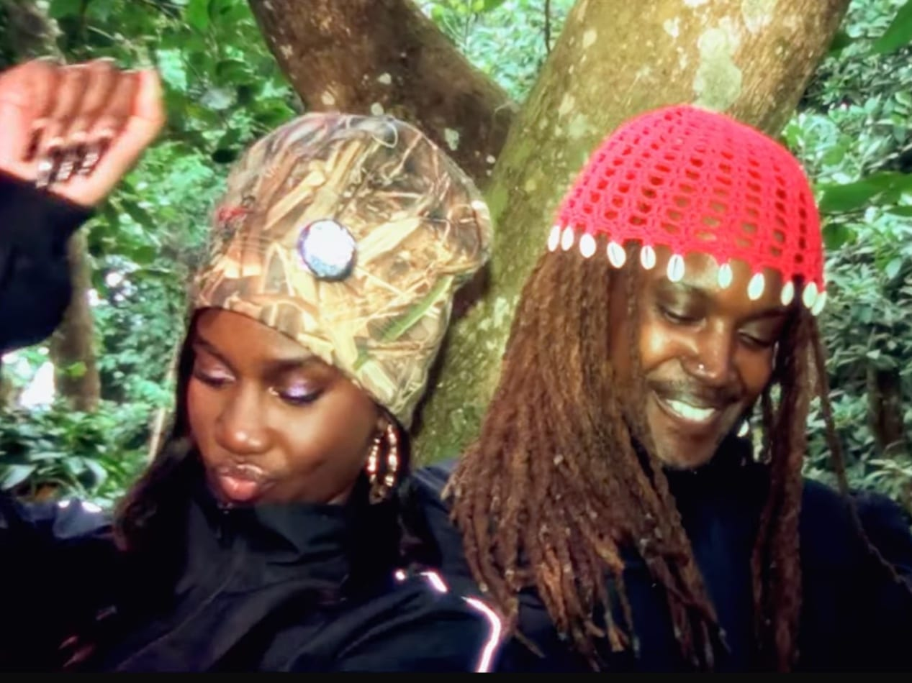

Production & Curation
Let it Pass music video

Let it Pass was the lead single from "Pressure", a joint album by mau from nowhere ft hihi
- RoleProducer
- DirectorDanny Skilton & mau from nowhere
Production & Curation

Let it Pass was the lead single from "Pressure", a joint album by mau from nowhere ft hihi